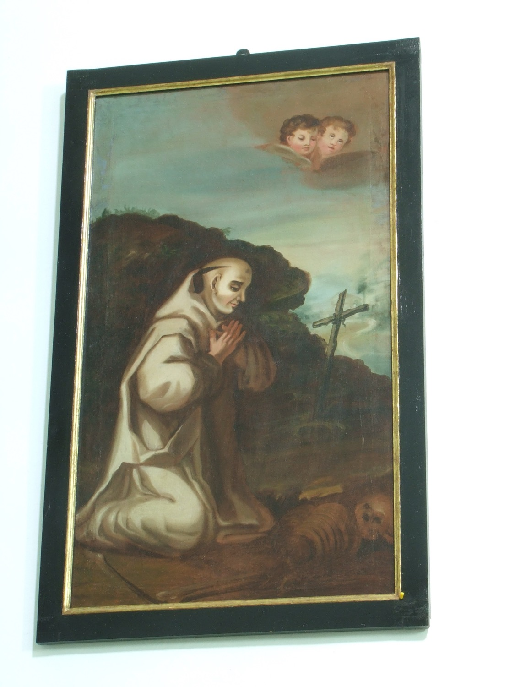

Sant Bernat (1090-1153) va ser un monjo i abat cistercenc, i una de les figures més importants de la cristiandat del segle XII. Quan tenia uns 22 anys ingressà al monestir de Cîteaux, en aquell moment l'única comunitat cistercenca que existia, i pocs anys després fundà el monestir de Claravall, del qual va ser abat fins que morí. Va ser un gran impulsor i propagador de l’orde del Císter, del qual fundà 68 monestirs més repartits per tota Europa. Va promoure una vida religiosa austera i contemplativa i destacà com a predicador, escriptor i gran difusor del culte a la Mare de Déu. També exercí una gran influència en els afers de l'Església del seu temps i predicà la Segona Croada. La tradició li donà el sobrenom de Doctor Mel·liflu per l'estil poètic i emotiu dela seus sermons. Va ser nomenat Doctor de l'Església l'any 1830 i és considerat el darrer dels Pares de l'Església.
En aquest quadre apareix vestit amb l’hàbit blanc cistercenc i el cap tonsurat. La seva postura, agenollat en actitud de contemplació davant un crucifix mentre sosté una corona d’espines entre les mans, recorda la importància que la meditació constant sobre la Passió de Crist té en l’espiritualitat cistercenca.